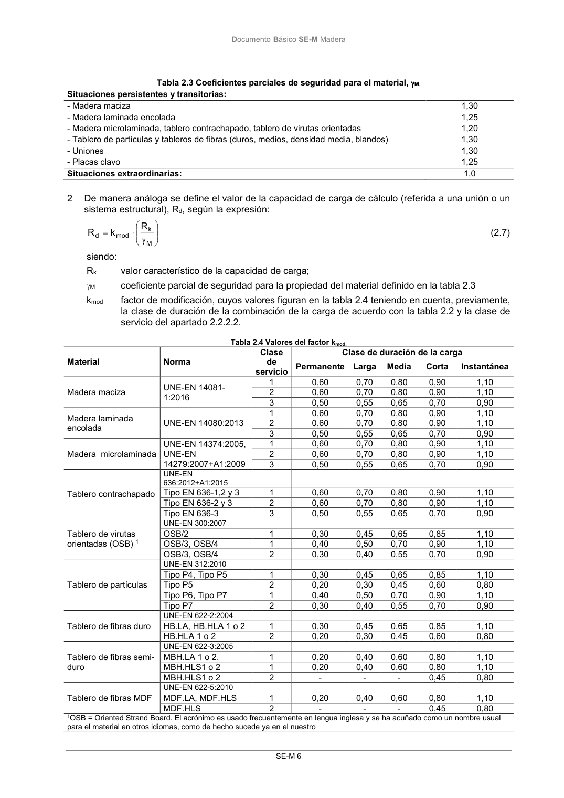

DB-SE-M · 2.2.3 Valor de cálculo de las propiedades del material y de las uniones · versión 2019-12-20 · capa oficial
Formatos: JSON compacto · Markdown · PDF fuente
Ámbito del documento · texto del ámbito · documento y tablas
ID técnico a0033 · PDF pág. 11-15 · jerarquía no validada por persona · contrastado con el literal de la página 11 (candidato tipográfico); no validado por persona · padre: raíz
2.2.3 Valor de cálculo de las propiedades del material y de las uniones 1 El valor de cálculo, Xd, de una propiedad del material (resistencia) se define como: M k mod d X k X (2.6) siendo: Xk valor característico de la propiedad del material; M coeficiente parcial de seguridad para la propiedad del material definido en la tabla 2.3; kmod factor de modificación, cuyos valores figuran en la tabla 2.4 teniendo en cuenta, previamente, la clase de duración de la combinación de carga de acuerdo con la tabla 2.2 y la clase de servicio del apartado 2.2.2.2. DocumentoBásico SE-M Madera SE-M 6 Tabla 2.3 Coeficientes parciales de seguridad para el material, M. Situaciones persistentes y transitorias: - Madera maciza 1,30 - Madera laminada encolada 1,25 - Madera microlaminada, tablero contrachapado, tablero de virutas orientadas 1,20 - Tablero de partículas y tableros de fibras (duros, medios, densidad media, blandos) 1,30 - Uniones 1,30 - Placas clavo 1,25 Situaciones extraordinarias: 1,0 2 De manera análoga se define el valor de la capacidad de carga de cálculo (referida a una unión o un sistema estructural), Rd, según la expresión: M k mod d R k R (2.7) siendo: Rk valor característico de la capacidad de carga; M coeficienteparcial de seguridad para la propiedad del material definido en la tabla 2.3 kmod factor de modificación, cuyos valores figuran en la tabla 2.4 teniendo en cuenta, previamente, la clase de duración de la combinación de la carga de acuerdo con la tabla 2.2 y la clase de servicio del apartado 2.2.2.2. Tabla 2.4 Valores del factor kmod. Material Norma Clase de servicio Clase de duración de la carga Permanente Larga Media Corta Instantánea Madera maciza UNE-EN 14081- 1:2016 1 0,60 0,70 0,80 0,90 1,10 2 0,60 0,70 0,80 0,90 1,10 3 0,50 0,55 0,65 0,70 0,90 Madera laminada encolada UNE-EN 14080:2013 1 0,60 0,70 0,80 0,90 1,10 2 0,60 0,70 0,80 0,90 1,10 3 0,50 0,55 0,65 0,70 0,90 Madera microlaminada UNE-EN 14374:2005, UNE-EN 14279:2007+A1:2009 1 0,60 0,70 0,80 0,90 1,10 2 0,60 0,70 0,80 0,90 1,10 3 0,50 0,55 0,65 0,70 0,90 Tablero contrachapado UNE-EN 636:2012+A1:2015 Tipo EN 636-1,2 y 3 1 0,60 0,70 0,80 0,90 1,10 Tipo EN 636-2 y 3 2 0,60 0,70 0,80 0,90 1,10 Tipo EN 636-3 3 0,50 0,55 0,65 0,70 0,90 Tablero de virutas orientadas (OSB) 1 UNE-EN 300:2007 OSB/2 1 0,30 0,45 0,65 0,85 1,10 OSB/3, OSB/4 1 0,40 0,50 0,70 0,90 1,10 OSB/3, OSB/4 2 0,30 0,40 0,55 0,70 0,90 Tablero de partículas UNE-EN 312:2010 Tipo P4, Tipo P5 1 0,30 0,45 0,65 0,85 1,10 Tipo P5 2 0,20 0,30 0,45 0,60 0,80 Tipo P6, Tipo P7 1 0,40 0,50 0,70 0,90 1,10 Tipo P7 2 0,30 0,40 0,55 0,70 0,90 Tablero de fibras duro UNE-EN 622-2:2004 HB.LA, HB.HLA 1 o 2 1 0,30 0,45 0,65 0,85 1,10 HB.HLA 1 o 2 2 0,20 0,30 0,45 0,60 0,80 Tablero de fibras semi- duro UNE-EN 622-3:2005 MBH.LA 1 o 2, 1 0,20 0,40 0,60 0,80 1,10 MBH.HLS1 o 2 1 0,20 0,40 0,60 0,80 1,10 MBH.HLS1 o 2 2 - - - 0,45 0,80 Tablero de fibras MDF UNE-EN 622-5:2010 MDF.LA, MDF.HLS 1 0,20 0,40 0,60 0,80 1,10 MDF.HLS 2 - - - 0,45 0,80 1OSB = Oriented Strand Board. El acrónimo es usado frecuentemente en lengua inglesa y se ha acuñado como un nombre usual para el material en otros idiomas, como de hecho sucede ya en el nuestro DocumentoBásico SE-M Madera SE-M 7 Si una combinación de acciones incluye acciones pertenecientes a diferentes clases de duración, el factor kmod debe elegirse como el correspondiente a la acción de más corta duración. DocumentoBásico SE-M Madera SE-M 9

PDF fuente redistribuible: copia fiel enlazada en esta página (SHA256 verificado).